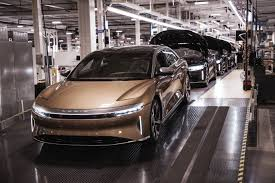

Ev's use one large battery to run one or more montors. Since it runs on electricity , it dosen't need any gas. That's why people like Ev's so much, because gas and be expenive. But if for some reason your battery runs out, there is a emgerany tank that takes gas and will be able to get you were you want to be!
Los EV usan una batería grande para hacer funcionar uno o más monitores. Como funciona con electricidad, no necesita gas. Es por eso que a la gente le gusta tanto Ev's, porque gas y es caro. Pero si por alguna razón su batería se agota, hay un tanque emgerany que toma gasolina y podrá llevarlo a donde quiere estar.
another reason people like it so much is that Ev's are safe can they have reduced the chane at car accdenits.For example, if you fall alseep on the wheel, the car will start to steer it's and make a loud beeping noise to wake you. Eventally if you don't wake up, the car will comer to a comnplete stop, most likley saving your life .
Otra razón por la que a la gente le gusta tanto es que los vehículos eléctricos están a salvo, ¿pueden haber reducido el cambio en los accesos de automóviles? Por ejemplo, si se cae sobre el volante, el automóvil comenzará a girar y emitirá un fuerte pitido para despertarlo. Eventualmente, si no se despierta, el automóvil se detendrá por completo y lo más probable es que le salve la vida.
A really cool fact abourt EVs is that their for safe for the enviortment. Since they run on battery tech, they make less emissdion, whicvh is the black smoake that comes out of a car. Also, did you know that the first Ev was created in 1834 by William Morrison, but he didn't even know it at the time!
Un hecho realmente interesante sobre los vehículos eléctricos es que son seguros para el medio ambiente. Como funcionan con tecnología de batería, producen menos emisiones, que es el humo negro que sale de un automóvil. Además, ¿sabías que el primer Ev fue creado en 1834 por William Morrison, pero ni siquiera lo sabía en ese momento?
